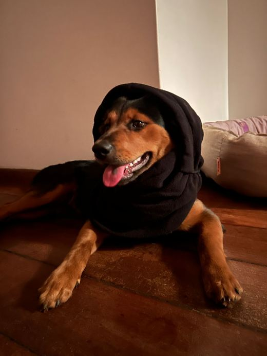

Tamarin
our pick- Calm, with beaches and mountains together
- Small, close expat crowd
- Room to walk Keyla
- Fewer shops, some errands mean a drive
This plan is for business only. business vacation.
A comfortable place runs roughly US$800–2,000 a month. Three spots to start looking.
No visa for us, 90 days on arrival.
The Premium Visa is free, lasts a year and renews, as long as we have remote income.
Known for safety and stability, which is the whole point.
An island in the middle of the Indian Ocean, far from every front line on your list.
Modern private clinics at prices that won't scare us.
English and French are everywhere, plus Kreol to learn.
Beaches, lagoons, green mountains. Also humid, so you get to complain about the weather.
Seven hours ahead of Brazil, so morning there is a fine time to call your mom.
i sure hope they have insulin
tick only what is actually happening
Refundable flights, start packing, check Keyla's blood test date and email Mauritius about her permit.
Any one of these and we leave within two weeks.
Ticks stay saved on this phone.
we gonna have to cover some ground ngl b0ss
No direct flights from Brazil. One-way fares from São Paulo have started around €800. Fill the All-in-One Travel form within 72 h before landing. If Keyla's permit isn't ready when we hit red, all three of us take Route B to the farm first and fly together once it lands.
No signal on the road? In Google Maps, download the Minas Gerais area first (your picture → Offline maps).
Least likely, most dramatic. Brazil has no nuclear weapons and isn't a target, so this one stays in the drawer.
When the meter hits red and we start Go mode, these become a dated list to tick off.
mauritius is kinda up tight as shit when it comes to importing caninos but I have thought of routes we should check those soon thougheverbeit

If red hits before her permit is in hand: all three of us go to the farm and fly together when it lands.
What we can get going now that's gonna save time later.
Ticks stay saved on this phone.
This clears every tick on the Uh-Oh-Meter.